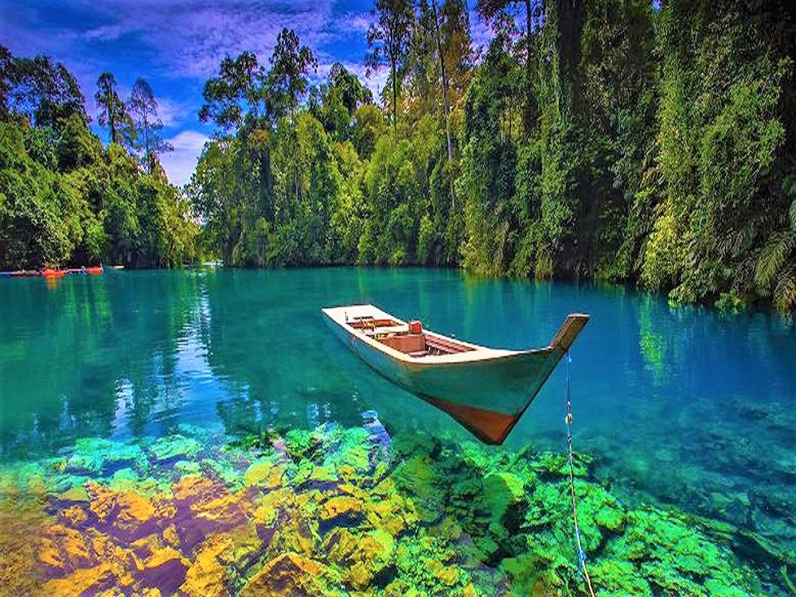

Danau Labuan CerminDanau Labuan Cermin adalah salah satu destinasi wisata air yang menarik di Kalimantan Timur. Berada di Desa Labuan Kelambu, Kecamatan Biduk-biduk, Kabupaten Berau, danau ini memiliki keindahan alam yang indah dan unik. |

Nusa LembonganPantai Melawai adalah salah satu pantai liar yang menarik untuk relaksasi. Lokasi pantai ini terletak di Thessaly, yang merupakan salah satu provinsi di Griya. |

Pantai SanurPulau Derawan adalah sebuah kepulauan yang terletak di Kabupaten Berau, Kalimantan Timur. Pulau ini memiliki banyak objek wisata bahari menawan, termasuk Taman Bawah Laut yang diminati wisatawan mancanegara, terutama para penyelam kelas dunia. |